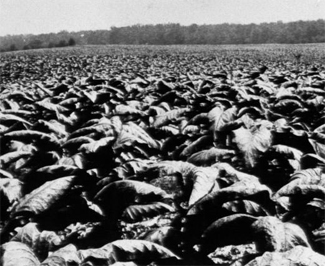
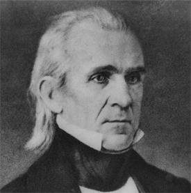
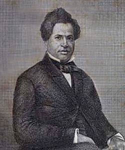

|
Almost as if a biblical parallel were intended, the first slave on record as
living in Tennessee had the name Abraham. In 1760 his master sent him to
Charleston, South Carolina, for help when hostile Indians besieged Fort Loudoun,
a trading post on the Little Tennessee River. Soon after, Tennessee's permanent
settlers employed a few slaves in grain farming at Watauga. By 1779 about 10
percent of east Tennessee's taxpayers owned slaves, mostly in sets of three or
fewer (the largest holding was ten slaves). Slaves accompanied the first
explorers and settlers who entered middle Tennessee. Indians captured or killed
some of them there and in east Tennessee during the skirmishing of the 1780s and
1790s. A few slaves boldly fled to the Indians in order to escape their masters.
|

A Tennessee tobacco plantation
|
As the frontier era passed, middle Tennessee slaves found themselves
cultivating market crops of tobacco and cotton. Montgomery Bell began the use of
Tennessee slaves in manufacturing at his ironworks downriver from Nashville.
Although by 1800 slaves composed 25 percent of middle Tennessee's population,
their percentage in east Tennessee was only 8 percent, lowering the statewide
proportion of slaves to 13 percent. In 1818 the opening of west Tennessee
greatly expanded the use of slaves in cotton and tobacco farming. The new
region's slave population reached 13 percent by 1820 and 26 percent by 1830,
pulling the statewide proportion up to 21 percent that year. The slave
proportion of the population grew at a slower pace thereafter.
By 1830 Tennessee had a detailed slave code that had evolved from that of its
mother state, North Carolina. Provisions borrowed from the North Carolina code
prohibited slaves from possessing guns, leaving the master's premises without a
written pass, owning property, testifying against whites, being manumitted
unless the county court ruled they had performed "meritorious service," hiring
their own time, and selling goods without a master's permission. Whites could
not encourage or aid a slave to run away. Counties hired patrollers to enforce
the code and held special courts to try slave violators.
In 1801 Tennessee replaced the "meritorious service" requirement for
manumission with the posting of a bond. The legislature in 1806 forbade
assembling, seditious speech, and provocative language by slaves; responsibility
for patrolling was transferred to the militia. During the next decade laws were
passed prohibiting the importation of slaves into the state for sale (1812) and
the sale of liquor to a slave without the master's approval (1813). Arson,
burglary, and rape became capital crimes in 1819 exclusively when committed by
blacks. In 1829 the legislature disbanded the separate slave courts and granted
slaves jury trials. In doing so, Tennessee was one of only five Southern states
that permitted jury trials for bondsmen. In 1831 the hiring of patrollers by
county courts was reinstated, and slaves were required to leave the state when
manumitted. In the 1830s, in the wake of sharp attacks against slavery by
immediatist abolitionists, Tennessee tightened its slave controls: laws forbade
advocating abolition, providing slaves with weapons, and permitting slaves to
act in any way as if free. The revised 1834 state constitution banned abolition
without the master's consent.
While Tennessee courts zealously protected the owners' property rights in
cases involving dishonest sales, lynching, and capital crimes, they also gained
distinction for fair treatment of slave defendants and plaintiffs. For example,
the ruling in the 1846 case of Ford v. Ford proclaimed that "A slave is
not in the condition of a horse... He has mental capacities, and an immortal
principle in his nature, that constitute him equal to his owner, but for the
accidental position in which fortune has placed him."
Government officials did not enforce all provisions of the slave code with
relentless rigidity. Permissive masters ignored many rules and apparently
suffered nothing more than popular derision for subsisting "free negroes."
Lenient masters seemed to be concentrated in particular localities, most notably
Nashville. One slave, Bob Renfro, received manumission there in 1801 for the
"meritorious service" of operating a popular tavern. Nashville always had some
slaves, like Renfro, who hired their own time and otherwise lived as if free. In
Maury County during the secession crisis a crusading prosecutor initiated cases
against masters who let their slaves keep animals but gave up when the judge
ordered merely nominal fines. Nevertheless, even in Nashville an insurrection
scare or a petition with many signatures could tighten up law enforcement.
A series of insurrection scares began in the state during the 1830s, possibly
as a response to renewed abolitionist activity in the North. These scares were
localized, brief, and barely publicized. Most likely the alleged insurrections
never took place at all, resulting from nothing more than unsubstantiated fears
that were quickly dispelled.
Such disruptions actually were rare and by 1840 slavery was firmly entrenched
in Tennessee society. The state's basic economic and social patterns by then had
already become clear. The distribution of slave property generally corresponded
with soil fertility, because better soil meant more commercial farming and a
greater demand for labor. In mountainous east Tennessee slaves never exceeded 9
percent of the population. The bulk of the state's slaves lived in the other two
regions, peaking in 1860 at 29 percent of middle Tennessee's population and 34
percent of west Tennessee's inhabitants. Even in those areas, however, slave
populations remained low in such infertile localities as the Tennessee River
valley and the Cumberland Plateau. In very few Tennessee counties did slaves
ever make up the majority. In fact, among the fifteen slaveholding states
Tennessee ranked tenth in the percentage of slaves (25 percent) in its whole
population at the end of the antebellum period. Nonetheless, probably one-third
of Tennessee's white families owned or hired slaves. Most masters held fewer
than four, and none owned over 500 bondsmen.
|

Tennessee governor (and later U.S. President) James K. Polk
|
The minority of slaves not in agriculture or industry worked in
transportation and domestic service. Several turnpike companies staffed their
repair gangs with slaves; steamboat and stevedore crews included them too.
Domestic servants cooked, cleaned, sewed, and waited upon masters.
As property, slaves were commercial goods. Some owners, like Andrew Jackson,
speculated in slave sales, just as they did with horses and land. A few men,
like the notorious John Murrell, profited from slave stealing. Commercial slave
traders appeared in the state as early as 1790, and a handful of businessmen in
Knoxville, Nashville, and Memphis came to specialize in this line of goods.
Lively markets also existed in the seats of counties with large slave
populations.
Masters employed the threat of selling troublesome slaves away from family
and friends as one of the control devices. While in the White House President
James K. Polk promised just such a fate for runaways in a letter read to the
assembled slaves on one of his plantations. White Tennesseans rarely manumitted
or educated slaves lest some blacks start questioning their 'bondage, though
Tennessee was one of the few slaveholding states that never prohibited slave
education. During the 1830s and 1840s evangelicals--preaching obedience to
slaves and paternalism to masters--made major efforts to convert the state's
slaves to Christianity. When allowing blacks to hold their own religious
meetings, whites demanded supervision for the religious instruction. Of course,
the ultimate control device in slavery always was physical punishment. While
state law guaranteed slaves a right to life and the necessities of life, it also
excused masters from deaths resulting from "moderate correction."
Rural isolation and routine stand out as central experiences in the
autobiographical accounts of Tennessee slaves (the state had only a small number
of urban slaves). Parties and visits to town were special occasions. Church
services were a regular source of intellectual and social stimulation for many
bondsmen. Black members had either separate seating or separate services. A few
churches established chapels exclusively for blacks, sometimes with a black
preacher in charge.
Unbeknownst to whites another type of black church flourished within the
slave community--underground, secret, religious meetings held by the slaves. A
common theme in these covert services was the belief in imminent providential
deliverance. Building upon Old Testament parallels and evangelical
millennialism, slave preachers argued that God opposed slavery and that He would
soon liberate them and punish their masters. Not all slaves, however, considered
this believable, nor were all bondsmen religious.
Tennessee slaves shared a common hostility toward the abuse they received at
the hands of their masters. Physical punishment particularly offended slaves.
Louis Hughes, a house slave in Memphis, recalled that "after the first burst of
tears, the feeling came over me that I was a man, and it was an outrage to treat
me so--to keep me under the lash day after day." The other major complaint of
slaves was the breakup of families. Ex-slave George Knox remembered vividly how
at age three he was placed on a Wilson County auction block, where his father
had to hold him up because of his small size. Families also were shattered when
a master moved, because many Tennessee slaves married someone with a different
owner. Abuses and grievances did not necessarily lead to action, however.
Jermain Loguen felt "so habituated ... to wrongs, that he met them without
disappointment, and endured them without complaint."
|

Jermain Loguen
|
When resistance occurred, it took a number of forms. Louis Hughes secretly
learned to read and write so as to gain access to forbidden information and to
forge passes for himself. I. W. Lindsay successfully used threats to limit
abuse: "they treated me pretty well," he recalled, "for the reason that I would
not allow them to treat me any other way." Iack, a slave on President Polk's
plantation, fought fiercely with his supervisor rather than succumb to the
humiliation of captivity. The ultimate way out of slavery, of course, was to
escape to the North, but distance made that very difficult for Tennessee
bondsmen. The quick method was to hide on a northbound steamboat. The long way,
adding weeks more to the trip, was to travel overland. The odds strongly leaned
toward capture either way. Census officials reported only seventy successful
runaways from Tennessee in 1850 and just twenty-nine in 1860.
The tensions within Tennessee slavery increased during the 1850s. In 1854 the
legislature moved to make manumission more difficult by conditioning it upon
emigration to Liberia. Further demonstrating their dedication to slavery, the
next year the legislators lifted the ban on slave importation, a prohibition
that had never been strictly enforced anyway. Close to the 1856 presidential
election, the first campaign in which a Northern party critical of slavery made
a strong showing, came Tennessee's most serious slave insurrection panic.
Beginning in Fayette, the county with the largest proportion of slaves in its
population, fear of slave revolt spread quickly through many other neighborhoods
in west and middle Tennessee. Vigilantes hanged four slaves at Dover, a number
of others were punished or arrested, and confessions were extorted through
whipping. The mere purchase of a bugle by a Wilson County slave aroused grave
suspicions among whites there. In his thorough study of the panic, historian
Charles B. Dew concluded that except possibly for loose talk among a handful of
slaves, no substance ever existed behind the widespread fears. Nevertheless, the
scare motivated the city governments of Memphis and Nashville to prohibit slaves
from preaching, receiving education, or being out after a curfew. Toward the end
of the 1850s Tennessee's legislature mandated capital punishment for slaves
conspiring to revolt and discussed re-enslaving free blacks who refused to leave
their state. Fear over slavery's security was on the rise as Tennessee and the
rest of the nation drifted toward war.
Editorials and pamphlets clearly show that these fears led directly to
Tennessee's decision in 1861 to secede from the Union and join the Confederacy.
During the Civil War the Confederate state government created large home guard
patrols to insure slave submissiveness, while the Confederate army helped to
capture and return runaways. Slaves proved essential to Confederate operations
in Tennessee, as a labor resource in the fields, in ironworks, and in military
camps. They constructed the state's line of defensive fortifications,
embankments that remained unfinished when the Union troops invaded in the winter
of 1861-1862 because masters did not want their valuable property's health
threatened by such hard work.
As Union armies proceeded to drive Confederates out of Tennessee, slavery's
control system broke down. Though most slaves never left home, some interpreted
the Confederacy's defeat as their long-expected providential deliverance. Others
saw it simply as a practical opportunity to escape slavery and to advance
themselves. Runaways first appeared at federal camps in 1861-1862, offering to
help the invaders, only to be turned away by the Union troops. Some Northern
officers returned slaves to masters. Gradually, however, the growing tide of
fugitives wore the army's resistance down, and the fugitives were put to work as
military laborers. Other contrabands bypassed the army camps entirely en route
to the occupied towns, where a labor shortage existed. Large black shantytowns,
the first black ghettos in Tennessee, quickly sprang up at these posts. The
contrabands vigorously sought to gain paying jobs, reunite their families,
secure an education, hold religious meetings without supervision, enter military
service, and win the vote.
Such assertiveness pressured Union authorities to support change. Once the
army began hiring black laborers, the establishment of refugee camps quickly
ensued. The army supervised the work of the contrabands, who labored under
contracts with local farmers and planters. Many black Tennesseans flocked to
join the U.S. Colored Troops once military enlistment of blacks began in 1863.
Northern reformers distributed charitable donations among needy blacks and
established schools for them.
Although Lincoln excluded Tennessee from the force of the final Emancipation
Proclamation in January 1863, it nonetheless pushed the state's unionists to
abolish slavery as they reconstructed local government. In August 1863, military
governor Andrew Johnson began swaying public opinion in that direction. In
September 1864 Johnson suspended Tennessee's slave code. Five months later a
referendum approved an amendment to the state constitution to abolish slavery.
Practically speaking, though, it took the state courts, the Union army, and the
Freedmen's Bureau the remainder of 1865 to liberate individuals forcibly kept
enslaved by stubborn masters.
Source: Randall M. Miller and John David Smith, eds. Dictionary of
Afro-American Slavery (Westport, CT: Praeger, 1997), 718-22.
|